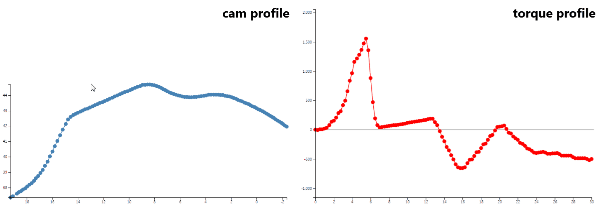

Work
Stark
A minimal invasive surgical robotic system
2022 - Present
Project

Interactive Torque Designer
Dynamic analysis through graphic interaction
2019
Interactive Torque Designer
My role: dynamic analysis, application development
Advisor: Geonhee Lee, Wangi Park, Junwon Seo, Yongsoo Kyong
Dynamic analysis of hinge takes important part on developing digital oven. Traditional method that uses a computational simulation software, however, takes complicated manipulation process. Hence, it cannot provide reverse engineering, which modifies dynaimc property such as torque and results in a desired hinge profile. Interactive Torque Designer solves these problems through dynamic analysis and web application which even enables interactive design with graphical modification.
 Web application has universality and scalability.
Any user can use this application only with internet browser and adapting additional function requires just simple programming.
Using d3.js library, plotted data enables to reflect dynamic analysis result graphically.
Consequently, user can get torque profile data only with manipulating visualized cam profile data and vice versa.
Direct user experience feedbacks of field engineers according to iterative design process suggests multiple drag and other functions which make design process more easily.
With the final version of Interactive Torque Designer, user can intuitively analyze torque and do the inverse engineering, which significantly simplifies mechanical design process of digital oven.
Furthermore, it helps engineer to explain to other division members about mechanical phenomena through graphical expression.
Web application has universality and scalability.
Any user can use this application only with internet browser and adapting additional function requires just simple programming.
Using d3.js library, plotted data enables to reflect dynamic analysis result graphically.
Consequently, user can get torque profile data only with manipulating visualized cam profile data and vice versa.
Direct user experience feedbacks of field engineers according to iterative design process suggests multiple drag and other functions which make design process more easily.
With the final version of Interactive Torque Designer, user can intuitively analyze torque and do the inverse engineering, which significantly simplifies mechanical design process of digital oven.
Furthermore, it helps engineer to explain to other division members about mechanical phenomena through graphical expression.
Advisor: Geonhee Lee, Wangi Park, Junwon Seo, Yongsoo Kyong
Dynamic analysis of hinge takes important part on developing digital oven. Traditional method that uses a computational simulation software, however, takes complicated manipulation process. Hence, it cannot provide reverse engineering, which modifies dynaimc property such as torque and results in a desired hinge profile. Interactive Torque Designer solves these problems through dynamic analysis and web application which even enables interactive design with graphical modification.
